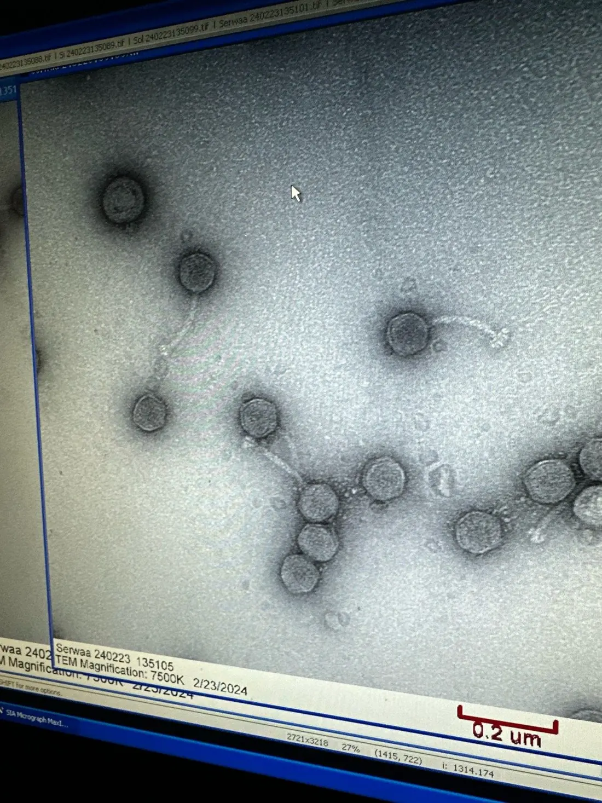

From Cape Coast to a phage that won't let go
A biochemistry degree in Ghana, seven courses taught before I was anyone's student again, and a virus that turns one bacterium into three thousand of itself. Here's how those connect.
Scroll, or skip to the formal CV
Ghana
Biochemistry, and a question about fruit
I read Biochemistry at the University of Cape Coast and graduated with a Second Class Upper. My undergraduate dissertation, with Dr. Jerry Ampofo-Asiama, was a physicochemical, functional and nutritional analysis of juice blends made from underutilised tropical fruits — the kind that grow well in Ghana and end up composted because nobody has characterised them.
It was not phage biology. But it was the first time I had a question nobody had written the answer to, and had to build the assay that would settle it. That turned out to be the transferable part.
- B.Sc. Biochemistry
- Second Class Upper
- First independent project
Teaching
Seven courses, and what teaching does to you
Before I was anyone's graduate student, I taught. Seven courses across two years at Cape Coast — Biological Oxidation & Bioenergetics, Biochemical Techniques, Enzyme Action & Catalysis, General Biochemistry Practical, Biostatistics, Diversity of Living Organisms — to more than seven hundred enrolled students. One practical alone had 209.
I also supervised six undergraduates on the phytochemistry of Garcinia kola. Standing in front of 200 people who will ask the one question you glossed over is the fastest way to find out which parts of your understanding are real. Most of how I explain my own work now was built there.
- 7 courses
- 700+ students
- 6 undergraduates supervised
College Station, TX
Ramsey Lab, and the Center for Phage Technology
I moved to College Station to start a Ph.D. in Biology (Microbiology) with Dr. Jolene Ramsey, affiliated with the Center for Phage Technology. Two semesters in I was back in front of a class, teaching Intro Biology I and II — different country, same job, and this time in a second language of instruction I had to learn the local idiom for.
The lab works on how phages decide to lyse. That decision is where I have spent the last four years.
- Ph.D. in progress
- Advisor: Dr. Jolene Ramsey
- Center for Phage Technology
Lysis inhibition
Delaying the inevitable
Most phages infect, replicate, and burst the cell on a schedule. Phage N4 can decline to. Under the right conditions it holds the cell together and keeps building — turning a single bacterium into a factory that puts out on the order of 3,000 particles over three to six hours instead of bursting early with a fraction of that.
My dissertation, Delaying the Inevitable — Lysis Inhibition in Bacteriophage N4, is an attempt to find that switch and describe how it is thrown. The applications I care about are phage therapy manufacture, where titer is the bottleneck, and programmable microbial biofactories.
- ~3,000 particles/cell
- 3–6 h window
- Lysis timing
Serwaa
A phage named after my grandmother
The first paper with my name on it is a genome announcement for a phage we isolated and called Serwaa, after my grandmother. Annie Koh, an undergraduate I mentored, did the work that made it a paper.
Naming an organism is one of the few things in science you get to do purely because it means something to you. I do not expect the name to matter to anyone reading the genome. It matters to me.
- doi:10.1128/mra.01222-25
- 3 phages isolated to date

bioRxiv
How N4 actually opens the cell
The first-author preprint describes the lysis machinery itself: N4 uses a SAR endolysin–holin system to take the host cell apart. Knowing the mechanism is what makes the inhibition question answerable — you cannot explain how something is delayed until you know what is being delayed.
- doi:10.1101/2025.11.12.688109
- First author
- Preprint
research software
The tools were self-defence first
Sixteen-odd open tools have come out of this PhD, and none of them started as a
project. They started as the twelfth time I wrote the same ggplot2
boilerplate, or the third evening lost to a dilution I could have solved on
paper if I trusted my arithmetic at 9pm.
They are browser-first and privacy-first — your data never leaves your machine — and the ones worth citing carry Zenodo DOIs. Building them is also how I learned to work with AI in the loop, which is the difference between a lab annoyance becoming a shipped tool in days rather than never.
- 16+ tools
- DOI-indexed
- Runs in the browser
Recognition
The Patterson Fellowship
In August 2025 I received the Thomas L. Patterson Graduate Student Fellowship. Alongside it: judging the Texas Junior Science & Humanities Symposium and the SACNAS Diversity in Science Symposium, mentoring incoming teaching assistants, and doing Darwin Day outreach with a cardboard phage that has held up better than expected.
- Patterson Fellowship
- Texas JSHS judge
- SACNAS judge

What I'm looking for next
I defend in 2027, and I want the hardest problem someone will let me near. I'm looking at postdoctoral positions where the question is genuinely open — phage–host decision-making, the biology nobody has a clean model for yet — and equally at biotech R&D, AI-for-science teams, translational research, and scientific software built by people who have run the experiment themselves.
What I'm optimising for is the difficulty and the interest of the problem, not the sector. A postdoc that lets me chase a real mechanism and a company solving something nobody has solved are the same job to me.
The through-line from the fruit juice project to N4 is the same thing every time: find the question nobody has settled, build the thing that settles it, then give the thing away so the next person starts further along.
Where that leaves things
As of August 2026.
That's the narrative version. The formal record — publications, talks, teaching tables, awards — lives in the CV.